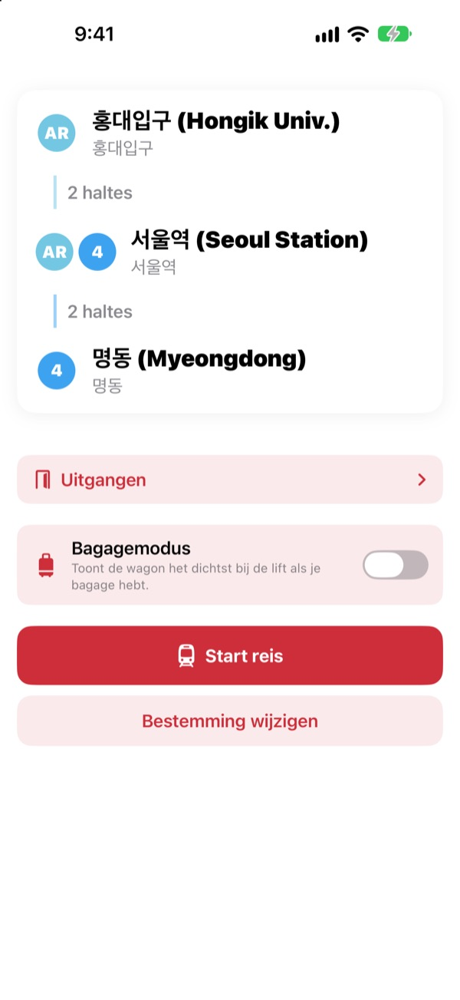
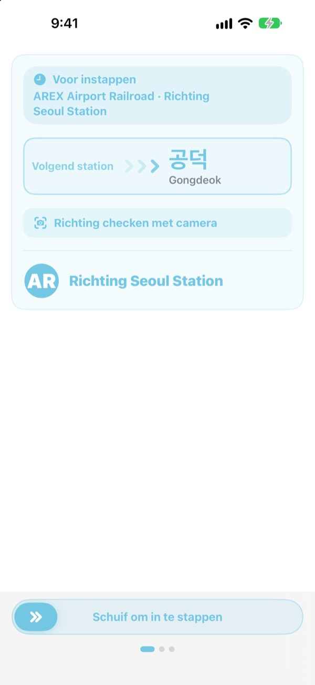
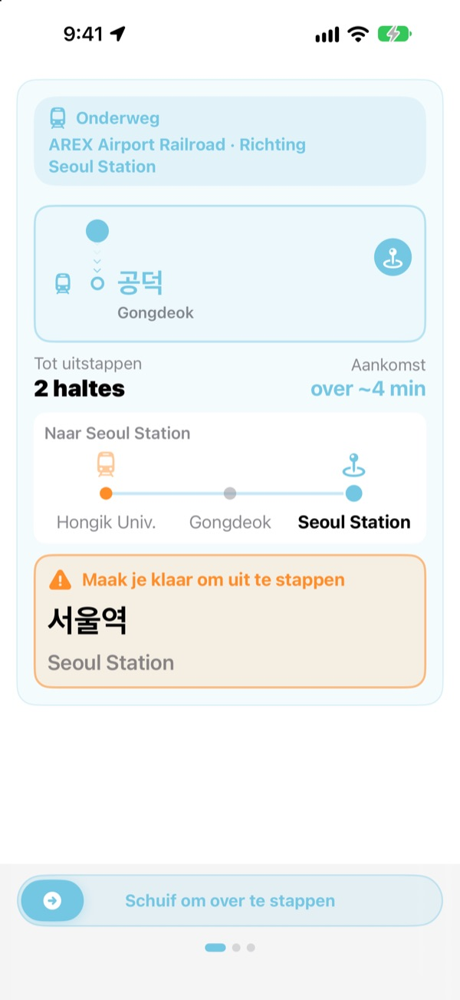
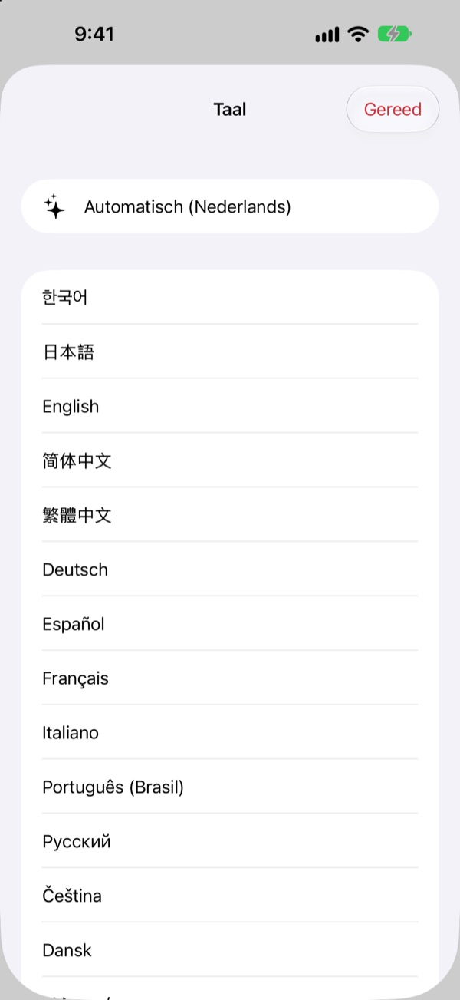

Het juiste perron.
De juiste halte.
Kies je vertrek en bestemming en KORA vertelt welke trein je moet nemen, precies zoals het op het bord op het perron staat. Onderweg volgt hij je station en zegt hij wanneer je moet uitstappen.
Route zoeken, rijrichting en realtime aankomsten zijn gratis.

Maak een proefrit
Je staat op Hongik Univ. aan de AREX-lijn. Kies waar je uitstapt en tik op Start reis om de rijrichting en de uitstapmeldingen te zien, net als in de app.
Ooit op het perron gestaan zonder te weten welke trein je moest nemen?
Kaartapps geven je de lijn, maar op het perron hangen alleen borden met namen van stations waar je nooit van gehoord hebt. Stap je in de verkeerde richting, dan moet je een paar haltes terug. Mis je de omroep, dan rijd je door. KORA noemt je trein zoals het bord dat doet en waarschuwt je vóór je halte.
Met de woorden van het bord
De trein die je moet nemen staat er precies zo als de bestemming op het perron en op de trein. Twijfel je? Richt de camera op het bord op het perron of de bestemmingsaanduiding van de trein en KORA zegt meteen of het de goede richting is.
De tekstherkenning gebeurt volledig op je iPhone.

Nooit meer doorrijden
KORA combineert realtime aankomsten, gps, het vertrekken en stoppen van de trein en de omroep aan boord om te weten waar je bent. Als je halte nadert krijg je ‘Maak je klaar om uit te stappen’ en daarna ‘Nu uitstappen!’, met trilling.
De voortgang zie je ook op het toegangsscherm en in het Dynamic Island.

23 talen, Koreaanse namen blijven
Gebruik de hele app in 23 talen; hij start in de taal van je iPhone. Stationsnamen staan in het Koreaans naast de Latijnse spelling van de borden, zodat je ze op het perron meteen herkent.

In drie stappen op weg
- 1
Kies je vertrek
Gps vindt het dichtstbijzijnde station, of kies zelf.
- 2
Kies je bestemming
Overstappen, haltes en de juiste trein staan er meteen.
- 3
Tik op Start reis
Het scherm en een trilling zeggen wanneer je eruit moet.
Waarvoor de toestemmingen dienen
- Locatie
- Het dichtstbijzijnde station vinden
- Camera
- Borden en bestemmingsaanduidingen lezen om de richting te checken
- Microfoon en spraakherkenning
- Stationsnaam en deurzijde uit de omroep in de trein halen
- Beweging en fitness
- Vertrek en stops merken zodat het huidige station nauwkeuriger is
Alle toestemmingen zijn optioneel. Zonder kies je zelf de stations en krijg je nog steeds route en uitstapmeldingen. Locatie, camera en omroep worden op je toestel verwerkt en nooit opgenomen, bewaard of verstuurd.
De weg vinden is altijd gratis. Begeleiding onderweg is KORA Pro.
Gratis
- Route zoeken en overstappen
- Het bestemmingsbord van de juiste trein
- Realtime aankomsten
- Richtingscheck met de camera
- Huidig station en uitstapmelding op het scherm
- Alle Pro-functies op je eerste drie reizen
KORA Pro
- Op elke reis: begeleiding op het toegangsscherm, herkenning van de omroep en trilling bij het uitstappen
- Uitgangen: wat er bij elke uitgang ligt op de Seoelse lijnen 1 tot en met 8
- Melding voor de laatste trein op lijn 1 tot en met 9
- Bagagemodus: de wagon het dichtst bij de lift op lijn 1 tot en met 8
Eén keer betalen en houden. Geen abonnement.
Zijn de gratis reizen op, dan kun je gewoon blijven reizen. De voortgang op het scherm blijft; alleen het toegangsscherm, de omroepherkenning en de trilling pauzeren.
Veelgestelde vragen
De app vindt mijn station niet of toont een verkeerd station.
Ga naar Instellingen > Privacy en beveiliging > Locatievoorzieningen > KORA, kies ‘Bij gebruik van app’ en zet ‘Nauwkeurige locatie’ aan. Onder de grond of in grote gebouwen kan gps ernaast zitten: tik bovenaan op de kaart van het huidige station en kies zelf. Alles werkt ook zonder locatietoegang.
Hoe werkt de richtingscheck met de camera?
Zodra de route in beeld is, open je de richtingscheck en vul je het beeld met het bord op het perron of de bestemmingsaanduiding van de trein. Koreaanse tekst werkt het best. Is het bord donker, ver weg of erg schuin, ga dan dichterbij staan en richt recht. Het resultaat is een hulpmiddel, kijk bij twijfel ook naar de borden in het station.
Realtime aankomsten worden niet getoond.
De gegevens komen van het Seoul Open Data Plaza, hebben internet nodig en zijn er vooral voor lijnen in de regio Seoel. Zonder verbinding of realtime gegevens schakelt KORA automatisch over op een schatting op basis van dienstregeling, gps en versnellingsmeter en blijft je begeleiden. Route zoeken werkt offline.
De uitstapmelding kwam iets te vroeg of te laat.
Onder de grond is gps zwak, waardoor het huidige station achter kan lopen. Geef je toegang tot de microfoon, dan corrigeert KORA de positie met de omroep in de trein. Meldingen zijn een hulpmiddel, dus luister ook naar de omroep en let op de borden.
Hoe verander ik de taal?
KORA start in de taal van je iPhone. Houd op het hoofdscherm een stationskaart ingedrukt (huidig station of bestemming) om de taalkeuze met 23 talen te openen.
De live-activiteit verschijnt niet op het toegangsscherm.
Controleer bij Instellingen > Apps > KORA (in oudere iOS Instellingen > KORA) of live-activiteiten aan staan. Hij verschijnt zodra je de begeleiding start en stopt als je de app helemaal sluit. Dynamic Island is er alleen op iPhone-modellen die het hebben.
Welke steden doen mee?
Ongeveer 930 stations in de regio Seoel (Seoel, Gyeonggi en Incheon, inclusief GTX-A, AREX, de Shinbundang-lijn en lightrail), Busan, Daegu, Gwangju en Daejeon. Wissel van stad met de regioknoppen bovenaan de stationskeuze.
Kan ik de app voor mijn reis uitproberen?
Ja. Kies zelf vertrek en bestemming en bekijk routes, overstappen en rijrichting vanaf elke plek ter wereld.
Is KORA Pro een abonnement?
Nee. Het is een eenmalige aankoop die je houdt, en het werkt met Delen met gezin. Heb je de app opnieuw geïnstalleerd, tik dan op Herstel aankoop in het Pro-scherm.
Wat gebeurt er met mijn gegevens?
Geen account en geen advertenties. Locatie, camera en omroepherkenning worden op je toestel verwerkt en nooit bewaard of verstuurd. We verzamelen alleen anonieme gebruiksstatistieken om de app te verbeteren.
Is de app toegankelijk?
KORA ondersteunt VoiceOver en grotere tekst. Suggesties voor betere toegankelijkheid zijn altijd welkom.
Ontbreekt er een station, klopt een naam niet of heb je een andere vraag? Mail naar mizzking75@gmail.com. Vermeld de appversie, je iPhone-model en de stations die je gebruikte, dan helpen we je sneller.